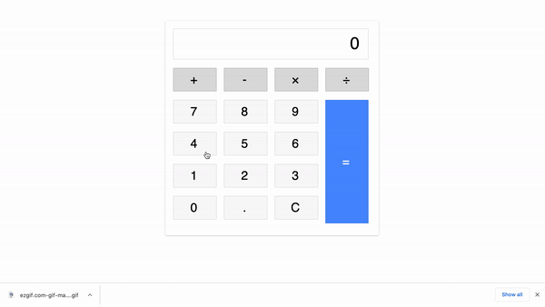

This is where I show the projects I have worked on
The projects featured here will contain a video showing the project in use, a link to the live project, and the source code
Stock Website
This was a team project I was inlvolved in during my studies
at Business College Helsinki. I acted as the Scrum Master for
this project and implemented and maintained the GitHub
repositories and ensured that Git was maintained correctly. I
implemented the feature seen in the GIF which was a asset
searcher function. This function takes the users input as they
type and matches their search query with the assets contained
in the API, once clicked it will update the graph with the
selected asset by making an API call. In addition to this I
also created the logo for this project using Figma.
Premier League Table
This was another project completed as a group during my
studies at Business College Helsinki. This project was created
using React and we utlised Git to manage our workflow. For
this I was resposible for creating the table which uses an API
to fetch the lastest Premier League positions and stats and
displays them in a easy to read table. Since this project uses
an API to generate the data the table will always be up to
date with the latest statistics.
Node.js Computer Project
This is a project created using Node.js and Express. This
application is a server which allows the following actions to
be carried out: Retrieve all computers, Retrieve computer by
ID number, update a computers information and delete a
computer by ID number. The project uses EJS to create
templates which are then dynamically filled when a certain
action is carried out.This project is not hosted however the
instructions on running the project are contained in the
GitHub repository. This was my first major project using
Node.js and Express and helped me understand how to create an
application containing a Front-end and Back-end.
Typescript Calculator

This was my first project using TypeScript and I created
during my studies at Business College Helsinki. This project
helped me familiarise myself with Typescript and the type
system. Since I have done several projects with JavaScript it
was useful to build a project using typescript and seeing the
differences, advantages and disadvantages of using TypeScript